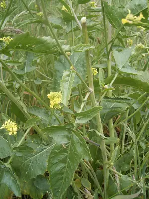

pranet · 出典付きの植物図鑑
ラピストルム・ルゴスム ☠
Rapistrum rugosum (L.) All. · Brassicaceae

Rapistrum rugosum is a species of flowering plant in the mustard family commonly known as bastard cabbage or annual bastard cabbage, as well as "common giant mustard", "turnipweed", "ball mustard", "wild turnip", "wild rape", or "tall mustard-weed". It is native to parts of Eurasia and Africa, but is present throughout the world as an introduced species and a common weed. It is an invasive species in many areas. It is an annual herb producing an erect stem reaching up to about a meter tall. The leaves are variable in shape and size and the proximal blades are generally cut into lobes or divided into leaflets. The herbage is coated in rough hairs. The inflorescence is a raceme of flowers with dark-veined yellow petals that are each under a centimeter long. The fruit is a knoblike spherical ribbed silique borne on a long pedicel with a widened area where it joins the fruit. It grows mainly in temperate areas. It is used as animal food, as a poison, for medicine, and for food.
出典: Wikipedia (en): Rapistrum rugosum · CC BY-SA 4.0
異名: Arthrolobus rugosus Andrz. ex DC., Bunias perennis Moench, Bunias raphanifolia Sm., Bunias verrucosa Moench, Cakile clavata (DC.) Spreng., Cakile rugosa (L.) L'Hér. ex DC., Cochlearia rugosa (L.) Crantz, Cordylocarpus glaber Dietr. ex Steud., Crucifera erratica E.H.L.Krause, Crucifera rugosa E.H.L.Krause, Hirschfeldia hispanica (L.) Linding., Myagrum clavatum Poir., Myagrum hispanicum L., Myagrum monospermum Forssk., Myagrum orientale L., Myagrum procumbens Pourr., Myagrum rugosum L., Myagrum venosum Pers., Rapistrum clavatum (Poir.) DC., Rapistrum confusum Pomel
同定や利用は自己責任でお願いします。この図鑑だけを根拠に野生の植物を食べないでください。
出典
- 学名: World Flora Online Plant List 2026-06 · CC0 1.0
- 名前: Wikipedia の記事名と Wikidata · CC0 1.0（Wikidata）。記事名は事実
- 説明: Wikipedia (en): Rapistrum rugosum · CC BY-SA 4.0
- 食用・毒性: World Checklist of Useful Plant Species (Diazgranados et al. 2020, RBG Kew) · CC BY 4.0
- 分布: World Checklist of Vascular Plants (WCVP), RBG Kew, version 2026-06-04 · CC BY 3.0
このページは pranet のデータから自動生成しています。コードは MIT、データは項目ごとのライセンス（説明）。